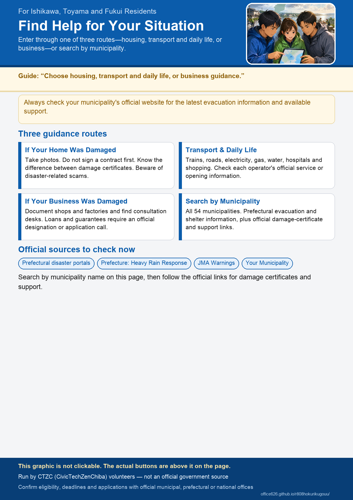

For Ishikawa, Toyama and Fukui Residents
This site is volunteer-run. Apply through the relevant official contact point, and always check official sources for the latest information.
If Your Home Was Damaged
Photos to take now, the difference between disaster damage certificates, and important precautions
Travel and Daily Life
Trains, roads, electricity, gas, water, hospitals, pharmacies, and shops
For Affected Businesses
Documenting damage to shops and factories, consultation services, and support that may become available
Find your municipality Find help by problem What may happen next, by stage
Official Information to Check Now
Find Official Notices and Support in Each Municipality
Links to official municipal pages on damage certificates, disaster waste, disinfection, housing, volunteer centers and more (Japanese). Some pages are general information rather than pages created for this heavy rain. Status and check dates reflect when a volunteer last looked. Always check the official source.
No matching municipality was found.
Information for supporters and partners
